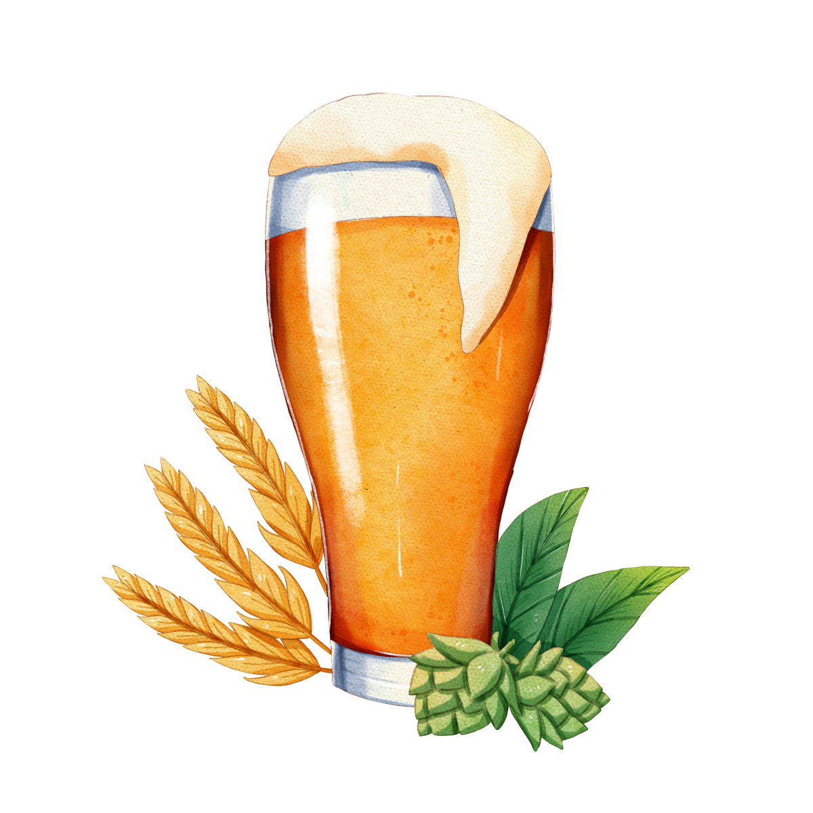

Cerveza con ingredientes naturales
La Cebada Puntana es el ingrediente principal, se encarga de darle
los elementos necesarios para su sabor,cuerpo y espuma. Seleccionamos y cultivamos
nuestras semillas con un riguroso control, asegurando la calidad desde el laboratorio rodante
hasta tu mesa.

HEISENBERG LAGER
Tienen un sabor suave y ligero, bajo contenido de alcohol, un color claro
y brillante. Esto se debe al uso de maltas pálidas en la elaboración.
HEISENBERG TRIGO
Suelen ser turbias, es decir sin filtrar, no se hacen con 100% malta de trigo,
pero sí tienen una cantidad elevada de este cereal, normalmente contienen una
mezcla de malta de trigo, y el resto de malta de cebada.
HEISENBERG ALE
Se considera una de las bebidas más antiguas que el hombre ha producido,
conservan su sabor frutal, dulce, con más cuerpo y con un color oscuro.
Quiero saber más